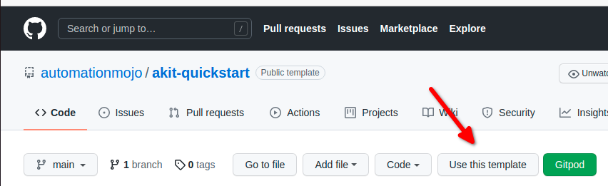
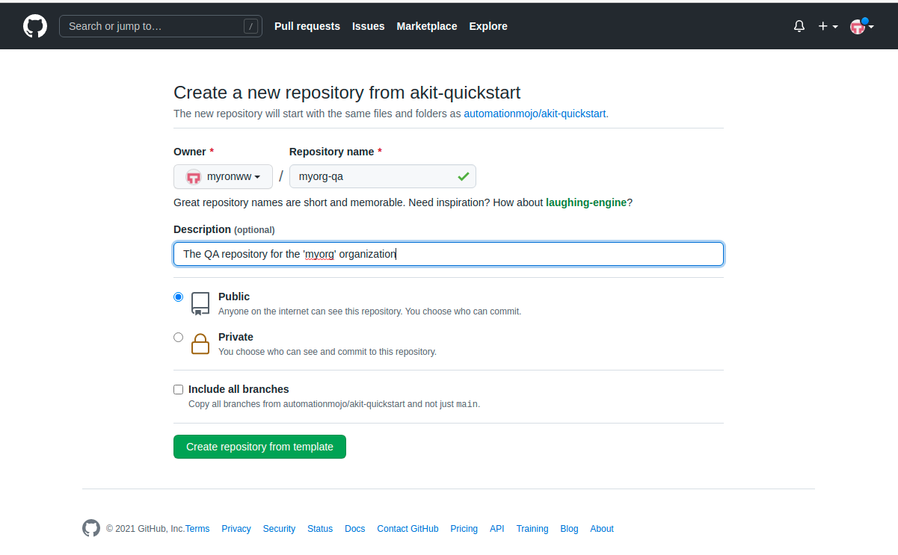

Getting Started
The AutomationKit is distributed as a PyPi package. So you can utilize it to create your own distributed automation projects. If you like.
However, keep in mind it can take a significant amount time and effort to learn how to setup a really effective enterprise class automation project that scale to meet the needs of a large organization. Creating such a project takes alot of trial and error and most likely lots of refactoring as you learn more about the unexpected challenges the complexed automation projects can throw at you.
Luckily, I have already learned alot of those lessons and that is one of the reasons I set out to write the AutomationKit framework.
To make it easy to get started, I created a Template project that makes it super easy to get started using the AutomationKit in a real world automation project repository that is layed out or organized well in order to make it scale well and avoid alot of pitfalls that show up a couple years into the effort when you really don’t need them to.
The template project and its associated documentation is located here.
To use the repository, you will create your own copy of the repository from the template, you can follow these simple steps.
Step 1: Create your repository
Because the Automation Kit Quick Start repository is setup as a template repository, when you view it in GitHub, you will see a Use this Template button.
{kind=link}
After clicking the Use this Template button, you should see the form popup that allows you to enter the name and restrictions of the new repository. Enter the information in the form and click the Create repository from template button.
{kind=link}
Step 2: Branch the repository
Once you have create a new repository for your project or organization. You need to change some things in the repository to brand it for your organziation. The following sections describes the things that will need to be change in order to brand the repository for your organization.
In order to brand the repository for your organization, follow the instructions in the branding instructions provided by the Automation QuickStart Project. The instructions are found in the `Documention https://automationmojo.github.io/akit-quickstart/usermanual/00-repository-branding.html`_